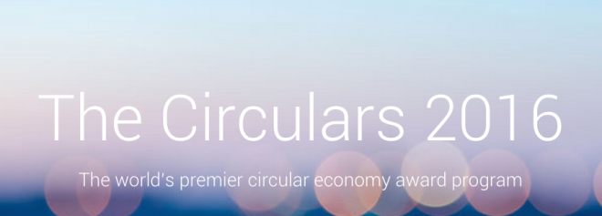

At the 2017 Seeds & Chips Global Food Innovation Summit in Milan, Italy, HydroFarms was presented with the Best Smart City Vision Award for it’s contribution to the economic and environmental sustainability of Newark and it’s potential to affect positive change in cities all over the world.
Recognition
100 Resilient Cities Platform Partner
HydroFarms is proud to announce a partnership with the Rockefeller Foundation’s 100 Resilient Cities initiative.
100 Resilient Cities – Pioneered by The Rockefeller Foundation (100RC) helps cities around the world become more resilient to social, economic, and physical challenges that are a growing part of the 21st century. Feeding a growing population while stemming the tide of climate change is a major challenge for cities all over the world and we are ready to offer our experience and expertise to the 100RC members.
B-Corp Certification
We are very proud to announce that HydroFarms is now a Certified B-Corp. B Corps are for-profit companies certified by the nonprofit B Lab to meet rigorous standards of social and environmental performance, accountability, and transparency.
Our own values are closely aligned with those of the growing community of B-Corp businesses. Check out our B Impact Report here to see how we fared in the extensive evaluation included in the application process.
NJBiz Business of the Year 2016
HydroFarms was awarded Business of the Year from NJBiz for medium-sized companies with 51 to 100 employees. The Business of the Year awards program celebrates New Jersey’s most dynamic businesses and business leaders who share a commitment to professional excellence, business growth and the community.
Governor's Environmental Excellence Awards 2016
HydroFarms was awarded the Governor’s Environmental Excellence Awards for 2016. This program was established by the New Jersey Department of Environmental Protection (DEP) in 2000 to recognize outstanding environmental performance, programs and projects in the state.

2016 World Economic Forum "Circulars" Finalist
HydroFarms was a finalist for the 2016 World Economic Forum (WEF) Ecolab Award for Circular Economy Enterprise. The Circulars recognize individuals and organizations that have made a substantive contribution to upholding the principles of a circular economy – wherein critical natural resources are not threatened.
2015 World Technology Award Winner for the Environment
HydroFarms has been awarded the World Technology Award for its innovation and impact on the environment. The World Technology Awards are presented by the World Technology Network as a way to honor those doing “the innovative work of the greatest likely long-term significance” in the fields of science and technology. Ed Harwood, Chief Science Officer at HydroFarms and the inventor of HydroFarms patented technology was a finalist for the individual World Technology Award in 2010.
2015 Red Herring Global 100 Winner
The Red Herring Top 100 award highlights the most exciting startups from Asia, Europe and the Americas. Hundreds of companies from each region are reviewed in a rigorous 3-step process that looks at all aspects of the company.
2015 Lux Executive Summit Americas
At the latest Lux Executive Summit Americas focused on innovation and latest technology for health and nutrition, HydroFarms was recognized as the most attractive company for a strategic partnership in the category of Life Sciences.
2014 World Economic Forum
Our CEO David Rosenberg was honored as one of the World Economic Forum’s “Transformational Leaders in Agriculture,” and he now co-chairs the “Technology and Innovation Group” helping define the global agenda on how technology can help address our agriculture challenges. In addition, David also co-chairs the Circular Economy Task Force, helping lead the charge on sustainability and environmental issues. He has also been part of the Global Water Security Council helping confront the #1 issue within agriculture and preserving our fresh water.
2013 Ellen Macarthur Foundation Circular Economy 100
The Ellen MacArthur Foundation focuses on how to re-think, re-design & build a positive future through the framework of a circular economy and fundamentally eliminating waste. HydroFarms is honored as the only agriculture company that is part of the Circular Economy 100, a global platform bringing together leading companies, emerging innovators and regions to accelerate the transition to a circular economy and to have a greater positive environmental impact.

2013 Accenture Sustainable 24
Focused on ‘Sustainability Innovation – Scaling for Transformational Impact’, bringing together thought-leaders like HydroFarms to drive discussion and debate amongst business and government leaders, civil society and other stakeholders across the world.
2012 Tie50 Award Finalist for Energy/CleanTech
Silicon Valley’s premiere annual awards program recognizing the best technology opportunities throughout the world. HydroFarms was selected as the Finalist out of over 2,000 different companies that were evaluated.
2012 Future Farm Americas Conference
A leading technology and innovation event for agriculture – HydroFarms was honored as the # 1 company to invest in.
2012 Wall Street Journal Eco:nomics Annual Event
HydroFarms was one of six companies selected to participate by Wall Street Journal editors for cutting-edge technology and ability to impact positively the environment. HydroFarms was voted # 1 by attendees to invest in given our break-through cleantech technology.

2011 CleanEquity Monaco Runner Up for Technology Research
Conceived by Prince Albert II of Monaco & Mungo Park, Chairman of Innovator Capital, CleanEquity Monaco is one of the top events in the world for emerging cleantech. HydroFarms is recognized as a Runner Up.
2011 World Technology Awards Finalist for the Environment
Since 2000, The World Technology Awards have been presented in association with TIME, Fortune, CNN, Science/AAAS, and Technology Review, recognizing select companies in 60 different countries in 20 different categories of science and technology doing “the innovative work of the greatest likely long-term significance.” Ed Harwood, Chief Science Officer for HydroFarms was a Finalist.
2011 Red Herrring Global Top 100 Finalist and 2010 Top 100 N. America Winner
The Red Herring editorial team selects the top 100 most innovative companies, evaluating both quantitative and qualitative criteria, such as financial performance, technology innovation, quality of management, and execution of strategy. HydroFarms was a North America 100 Winner and Global Finalist.
back